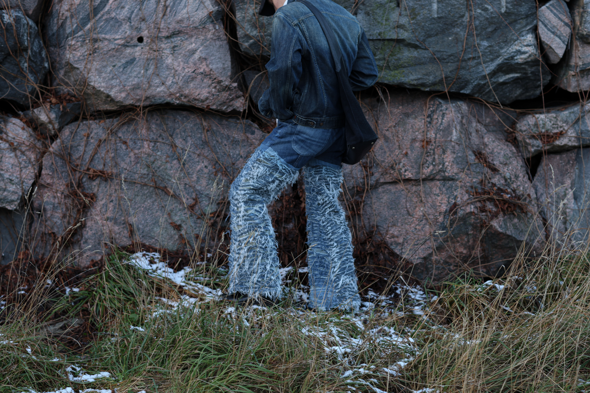
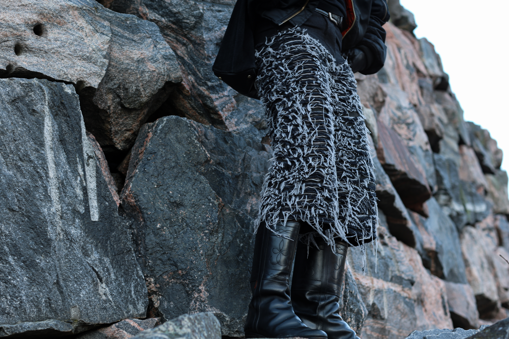

The Brand
Founded in Helsinki, Finland, Lorimer is an independent fashion label centred on the relationship between garment, wearer and time. Through considered pattern cutting, purposeful construction and a disciplined approach to materials, the brand creates clothing shaped by form, proportion and silhouette, designed to feel instinctive to wear while remaining quietly distinctive.
Lorimer focuses on garments that evolve with use, softening over time and taking on character through movement, wear and everyday life. Each piece is intended to accompany its wearer beyond the first impression, developing in a way that is unique to the individual and shaped by the life it lives.
Responsibility is approached through permanence rather than excess. By producing in limited quantities, prioritising considered manufacturing and focusing on enduring design over disposable consumption.
The brand is built on the belief that thoughtful design should remain accessible. By maintaining a direct relationship with its customers, Lorimer aims to place lasting garments into the hands of those who will build a personal connection with them.


Terms & Conditions
Terms of Sale
These Terms of Sale govern all purchases made through lorimerclothing.com. By placing an order with Lorimer, you confirm that you have read and accepted these Terms of Sale.
These Terms should be read together with our Deliveries & Shipping, Payments, Returns & Exchanges, Pricing, VAT & Customs, and Privacy Policy pages, which form an integral part of these Terms.
Orders
All orders are subject to acceptance and product availability. Once an order has been placed, you will receive an order confirmation by email. Lorimer reserves the right to refuse or cancel an order in the event of pricing errors, inaccurate product information, suspected fraudulent activity, payment issues or product unavailability. If payment has already been received for a cancelled order, a full refund will be issued to the original payment method.
Product Information
We make every reasonable effort to ensure that product descriptions, measurements, colours and imagery are presented as accurately as possible. Due to differences in screen settings and individual devices, slight variations in colour and appearance may occur.
As every Lorimer garment is carefully produced, minor variations in texture, finish or construction should not be considered faults but part of the character of the product.
Payments
All payments are securely processed through trusted payment providers. Lorimer does not store or have access to your complete payment information.
Available payment methods may vary depending on your location and will be displayed during checkout.
Shipping & Delivery
Orders are dispatched from Helsinki, Finland. Shipping methods, delivery estimates, pricing and customs information are outlined in our Deliveries & Shipping and Pricing, VAT & Customs sections below.
While every effort is made to dispatch orders within the stated timeframes, delivery dates are estimates and may be affected by courier services, customs authorities or circumstances beyond our reasonable control.
Returns & Refunds
Returns are accepted in accordance with our Returns & Exchanges policy.
Approved refunds will be issued to the original payment method after the returned item has been received and inspected. Refund processing times may vary depending on your payment provider.
Governing Law
These Terms of Sale are governed by and interpreted in accordance with the laws of Finland. Any disputes arising in connection with purchases made through Lorimer shall be subject to the applicable courts of Finland, without affecting any mandatory consumer rights available under applicable legislation.
If you have any questions regarding these Terms of Sale or your order, please contact us at contact@lorimer.com.
Website Terms of Use
By accessing or using lorimer-clothing.com, you agree to comply with these Website Terms of Use.
Intellectual Property
All content available on this website, including but not limited to photographs, graphics, logos, artwork, text, product designs, garment designs, layouts and other visual material, is the intellectual property of Lorimer unless otherwise stated.
No content from this website may be copied, reproduced, distributed, published, modified or used for commercial purposes without the prior written permission of Lorimer.
Acceptable Use
You agree not to use this website in any manner that is unlawful, fraudulent or intended to interfere with its operation. Any attempt to gain unauthorised access to the website, its servers or associated systems is strictly prohibited.
Website Availability
Lorimer aims to ensure that this website remains available and functions reliably at all times. However, temporary interruptions may occasionally occur due to maintenance, technical issues or circumstances beyond our control.
Lorimer reserves the right to update, modify or discontinue any part of the website, its content or its services without prior notice.
Limitation of Liability
To the fullest extent permitted by applicable law, Lorimer shall not be liable for any indirect or consequential losses arising from the use of this website. Nothing within these Terms limits or excludes any rights that cannot legally be excluded under applicable consumer protection legislation.
If you have any questions regarding these Website Terms of Use, please contact us at contact@lorimer.com.
Deliveries & Shipping
Every Lorimer order is carefully prepared and dispatched from our studio in Helsinki, Finland using Posti, Finland's national postal service. All shipments include tracking, allowing you to follow your order from dispatch to delivery.
Orders are typically dispatched within 1–3 business days. During collection launches or busy periods, dispatch times may be slightly longer.
Finland
Shipping: €7.90
Estimated delivery: 1–3 business days
European Union
Shipping: €14.90
Estimated delivery: 3–7 business days
All orders shipped within the European Union are delivered without additional customs duties or import charges.
United Kingdom
Shipping: €19.90
Estimated delivery: 4–8 business days
Orders shipped to the United Kingdom may be subject to import duties, VAT or customs handling fees determined by local customs authorities. These charges, where applicable, are the responsibility of the customer.
Worldwide
Shipping: €24.90
Estimated delivery: 5–14 business days
International orders shipped outside the European Union may be subject to import duties, taxes or customs charges determined by the destination country. Any applicable fees remain the responsibility of the customer.
Please note that delivery times are estimates and may vary depending on the destination, customs processing and local postal services.
Local Collection & Fittings
Customers located in or visiting Helsinki are welcome to enquire about arranging a private fitting or collection by appointment.
If you are interested in experiencing Lorimer in person, please contact us and we will be happy to discuss available appointments.
Payments
We accept all major credit and debit cards, together with a selection of trusted local and digital payment methods, including Apple Pay, Google Pay, PayPal, Klarna and MobilePay where available.
All payments are processed securely through certified payment providers using encrypted connections. Lorimer does not store or have access to your full payment card details at any stage of the transaction.
Available payment methods may vary depending on your location, currency and device. The payment options available for your order will be displayed during checkout.
Orders are processed once payment has been successfully authorised. If a payment cannot be completed or is declined by your payment provider, the order will not be confirmed and no products will be reserved until successful payment has been received.
Pricing, VAT & Customs
Finland & European Union
All orders shipped within Finland and the European Union include applicable VAT.
Your order will be delivered with no additional customs duties or import charges, allowing you to complete your purchase with confidence, knowing the price shown at checkout is the final price you will pay.
United Kingdom
Orders shipped to the United Kingdom may be subject to import duties, VAT and customs handling fees determined by UK customs authorities.
These charges are not included in your order total and, where applicable, are the responsibility of the customer. As customs regulations may change over time, we recommend checking your local import requirements before placing an order.
Worldwide
Orders shipped outside the European Union may be subject to import duties, taxes, customs fees or other charges imposed by the destination country.
These charges are determined by local customs authorities and are outside of Lorimer's control. Where applicable, any additional duties or taxes are the responsibility of the customer.
If you're unsure about possible import charges in your country, please don't hesitate to contact us before placing your order. We'll always do our best to provide guidance and ensure you have the information you need before your purchase.
Return & Exchange Policy
We hope every Lorimer garment becomes a lasting part of your wardrobe. If you wish to return an item, you may request a return within 14 days of receiving your order.
All returns must be registered through the Lorimer Returns & Exchanges Portal before the item is sent back. Returns received without an approved return request may not be accepted.
To qualify for a return, the item must be returned in its original condition. Garments must be unworn, unwashed, unaltered and free from stains, odours, damage or any signs of use beyond what is necessary to inspect the product. All original tags, garment packaging and accompanying materials must be included.
Returned items remain the customer's responsibility until they have been safely delivered to Lorimer. We strongly recommend using a tracked shipping service, as Lorimer cannot accept responsibility for items lost or damaged during return transit.
Unless the item is faulty or incorrectly supplied, return shipping costs are the responsibility of the customer.
Once your return has been received and inspected, any approved refund will be issued to the original payment method. Refunds are processed within 14 days of receiving the returned item. The time required for the funds to appear in your account may vary depending on your payment provider.